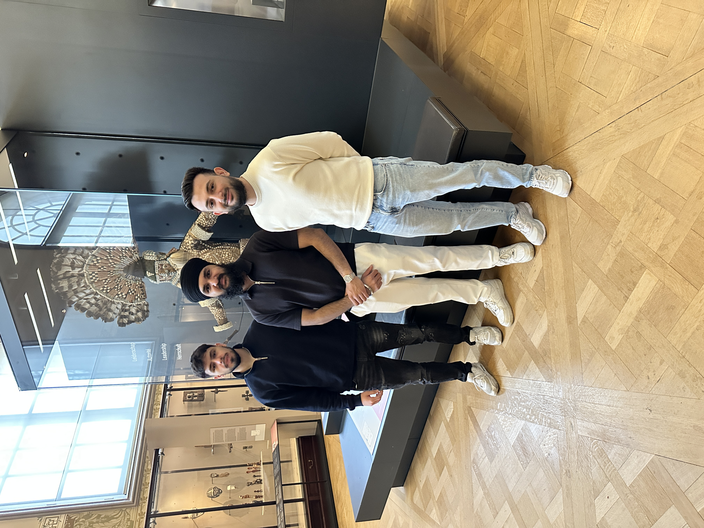

Historic Context
The cultural activity we visited was the Africa Museum in Tervuren, near Brussels. The museum focuses on the history, culture and nature of Central Africa, especially the Democratic Republic of Congo.
The museum was originally created in 1898 by King Leopold II of Belgium. During that period, Congo was under the personal control of the king and was known as the Congo Free State. Many historians describe this period as extremely violent and exploitative. Millions of Congolese people suffered because they were forced to work in the rubber and ivory industries.
For many years, the museum mainly showed Africa from a colonial perspective, where European colonization was presented as something positive. However, in recent years the museum has changed its approach. After a major renovation in 2018, it now tries to critically explain Belgium’s colonial past and acknowledge the suffering that occurred during colonization.
The museum includes exhibitions about colonial propaganda, forced labour, racism and the way Africans were dehumanised during colonial rule. It also shows African cultures, art and voices from Congolese people themselves.
According to historians such as Adam Hochschild in his book King Leopold’s Ghost, the exploitation in Congo during Leopold II’s rule caused millions of deaths and is considered one of the darkest chapters of European colonial history.
Our Reflections
Each member of our group has documented their personal experience, thoughts, and answers to reflection questions on their own page.
Our Team
We are a group of three students Erhan, Anmoldeep and Kerim who visited the museum together to reflect on history and learn from the past.

Look to the Future
After visiting the Royal Museum for Central Africa, we realized how important it is to continue learning about difficult parts of history such as colonialism and the dehumanization of people. Understanding these events helps us recognize how racism, inequality and discrimination developed over time. When people are aware of this history, it becomes easier to prevent similar injustices from happening again.
Museums like the Africa Museum play an important role in this process. By presenting history in a more critical and honest way, they encourage visitors to reflect on the past and think about the consequences of colonial actions. This can help create more awareness and understanding between different cultures and communities.
Looking to the future, it is important that societies remain open to discussing their past, even when it is uncomfortable. Education is key, especially for younger generations. Schools, museums and public discussions can help people better understand history and its impact on today’s world.
In conclusion, remembering and learning from history can help us build a more respectful and equal society. By acknowledging past mistakes and reflecting on them, we can work towards a future where all people are treated with dignity and respect.